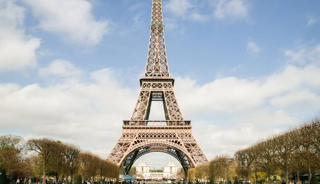
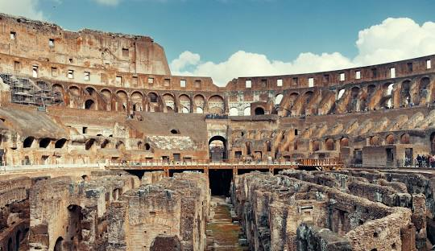
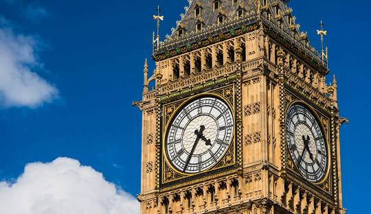
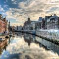

Torre Eiffel, Paris
A Torre Eiffel é um dos marcos mais icônicos do mundo. Localizada em Paris, a "Cidade Luz", é um dos principais pontos turísticos da Europa e uma parada obrigatória para qualquer visitante.

Coliseu, Roma
O Coliseu é uma das mais impressionantes estruturas do Império Romano e está localizado no coração de Roma. Este anfiteatro já foi palco de grandes batalhas de gladiadores.

Big Ben, Londres
O Big Ben é uma das torres de relógio mais famosas do mundo, localizado em Londres. Sua arquitetura neogótica atrai milhões de visitantes todos os anos.

Canais de Amsterdã, Holanda
Amsterdã é famosa por seus canais que cortam a cidade. Esses canais oferecem passeios inesquecíveis e vistas encantadoras da arquitetura histórica da cidade.